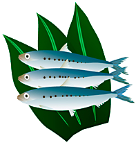

2011年10月号
「鰯（いわし）」はホントに弱い魚なの？

「鰯はホントに弱いのか？」そして「鰯の何が弱いの？」と、皆さん考えたことありませんか。その理由については次の2つの説が有力です。
その1
もともと鰯自体が外圧に弱い魚であるため、陸に上げるとすぐに傷んで死んでしまうことから、「弱し（よわし）」と呼び、それが変化して「いわし」と呼ばれるようになり、漢字についても「魚」が「弱い」で、「鰯（いわし）」になったといわれています。
その2
「鰯は敵に襲われた時、きらきら光る鱗（うろこ）をわざと敵に剥（は）がさせて錯乱し、その隙に仲間が逃げる」その際、鱗が非常に弱いことから「鰯」と書いたといわれています。そして敵に食べられてしまうほど弱い魚だからという意味もあるようです。
「その1」が、一般的な解釈かな？とも思われますが、「その2」は仲間を守るために大きな犠牲を払う「鰯」がいることから「弱い魚」ではなく、ホントは「強い魚」なのかもしれませんね！
ところで話しは違いますが、「弱虫」とか「苦虫」という言葉には、「虫」が使われますが、「魚」は使われません？言葉や漢字って、とても難しいですね！！
この難題については、お酒の肴（さかな）として考えてみようと思います・・・。
その1
もともと鰯自体が外圧に弱い魚であるため、陸に上げるとすぐに傷んで死んでしまうことから、「弱し（よわし）」と呼び、それが変化して「いわし」と呼ばれるようになり、漢字についても「魚」が「弱い」で、「鰯（いわし）」になったといわれています。
その2
「鰯は敵に襲われた時、きらきら光る鱗（うろこ）をわざと敵に剥（は）がさせて錯乱し、その隙に仲間が逃げる」その際、鱗が非常に弱いことから「鰯」と書いたといわれています。そして敵に食べられてしまうほど弱い魚だからという意味もあるようです。
「その1」が、一般的な解釈かな？とも思われますが、「その2」は仲間を守るために大きな犠牲を払う「鰯」がいることから「弱い魚」ではなく、ホントは「強い魚」なのかもしれませんね！
ところで話しは違いますが、「弱虫」とか「苦虫」という言葉には、「虫」が使われますが、「魚」は使われません？言葉や漢字って、とても難しいですね！！
この難題については、お酒の肴（さかな）として考えてみようと思います・・・。
 次月号へ
次月号へ